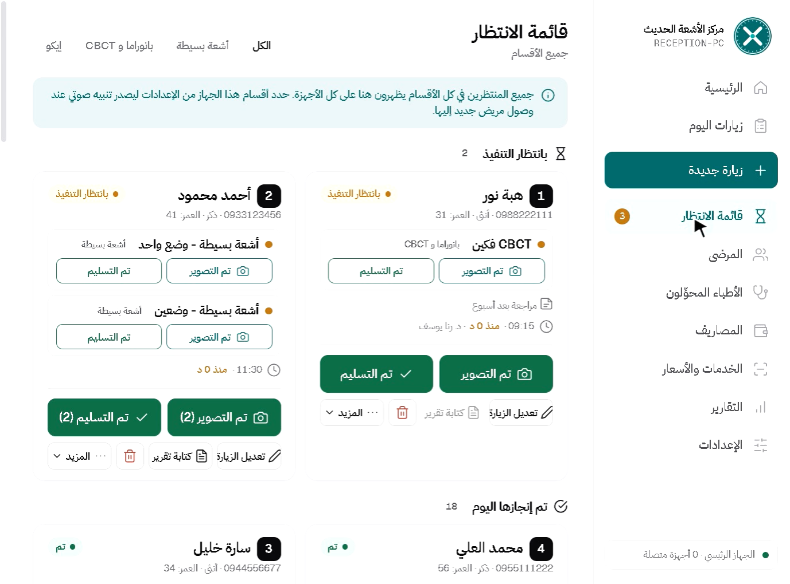
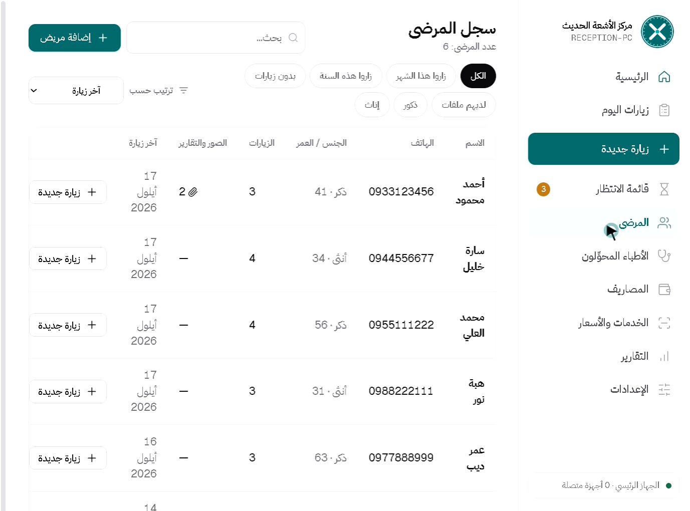
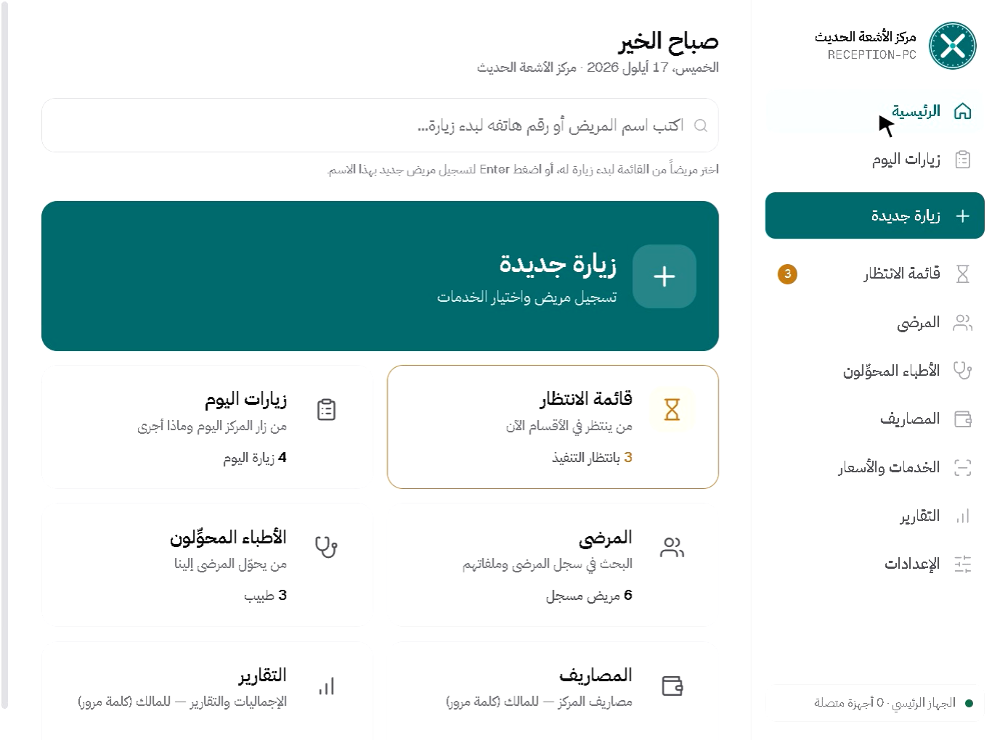
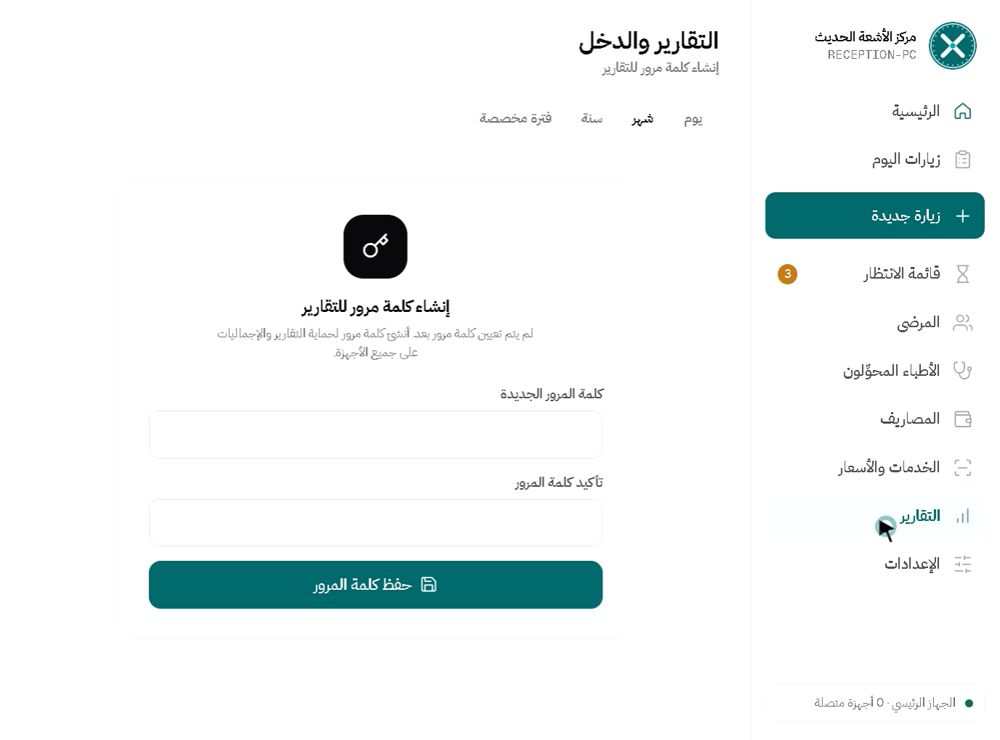

Clinic Manager
A work queue per department on its own screen, images and reports in the patient file, and expenses and profit reports for the centre.
Inside the program




What it does
A queue per department
Reception registers the patient and each department sees them in its own queue, with a sound alert for new work.
Department computers linked
One main computer, the rest join it over the centre network. No internet, no subscription.
Images and reports in the file
Images and PDFs are saved with the visit and its date, so you find them in a second two years later.
Income and expenses
Log film, electricity and salary costs, and see the net figure rather than income alone.
Profit reports locked
The daily report is open to staff; monthly and yearly need a password that unlocks for fifteen minutes.
Backup and restore
One-click backup to a USB stick, restored onto any other computer the same way.
Installing takes two minutes
No technical experience needed. Download the file, run it, open the program.
Download the file
Press the download button on the product page. The file lands in your Downloads folder.
Run the installer
Double-click it. If Windows shows a warning, choose "More info" then "Run anyway".
Open the program
It asks for your clinic name, doctor name and logo, and it is ready to use.


Not sure which one fits?
Send a message with your specialty and I will reply personally.